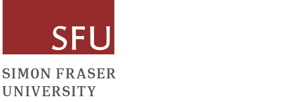

| Home | Registration | Program | Directions | Announcements |
The conference is to promote the presentation and discussion on the latest progress in statistical learning for large-scale data. It empowers organizations and researchers to harness the vast amount of information available today, leading to better decision-making, improved efficiency, and the potential for groundbreaking discoveries across various domains.
Postdocs and Students are encouraged to present their work during the poster session. Travel awards are available for postdocs and students who present their work. The best poster award will also be presented at the end of the conference.
This conference is being organized by Jiguo Cao and Liangliang Wang. The organizers are grateful for support from the following sponsors:
|  |
|